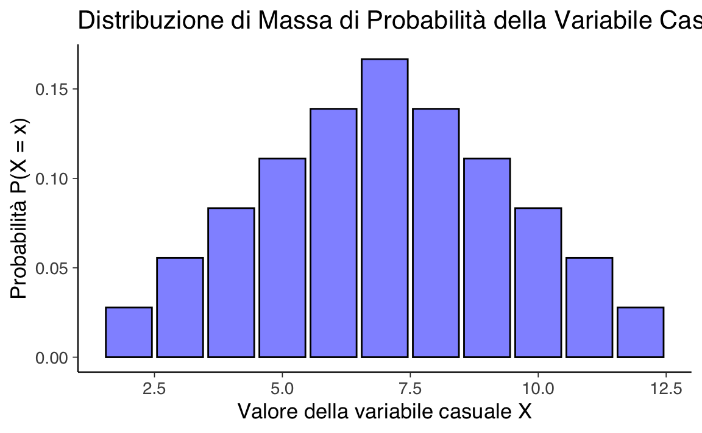

28 Variabili casuali
- comprendere le definizioni e le caratteristiche delle variabili casuali discrete e continue, nonché le loro distribuzioni di probabilità;
- calcolare e interpretare il valore atteso di variabili casuali, sia discrete che continue;
- determinare e comprendere la varianza e la deviazione standard di variabili casuali discrete e continue, esplorando come queste misure di dispersione descrivano la variabilità dei dati.
- Leggere il capitolo Random variables and their distributions del testo di Blitzstein & Hwang (2019).
- Leggere il capitolo Random Variables and Distributions (Schervish & DeGroot, 2014).
- Leggere l’appendice Capitolo 82.
28.1 Introduzione
Finora, ci siamo concentrati sulle probabilità degli eventi. Ad esempio, abbiamo calcolato la probabilità di vincere il gioco di Monty Hall o di avere una rara condizione medica dato che il test è risultato positivo. Ma, in molti casi, vorremmo sapere di più. Ad esempio, quanti concorrenti devono giocare al gioco di Monty Hall fino a quando uno di loro finalmente vince? Quanto durerà questa condizione? Quanto perderò giocando d’azzardo con un dado sbilanciato tutta la notte? Per rispondere a queste domande, dobbiamo lavorare con le variabili casuali. In questo capitolo, introduciamo le variabili casuali e le loro proprietà.
28.2 Definizione
Le variabili casuali sono risultati numerici derivanti da processi aleatori. Esse ci consentono di trasformare risultati qualitativi (ad esempio \(X = \{\Box, \clubsuit, \diamondsuit, \heartsuit, \spadesuit\}\)) in valori numerici, semplificando così l’analisi matematica.
Formalmente, una variabile casuale è definita come una funzione che associa ogni elemento di uno spazio campionario \(S\) a un valore in un sottoinsieme dei numeri reali \(\mathbb{R}\). Questa definizione consente di esprimere numericamente gli esiti di un fenomeno aleatorio, associando un valore specifico a ciascun possibile risultato dell’esperimento.
Esempio 28.1 Un esempio è la variabile casuale \(X\), che rappresenta il risultato del lancio di un dado. Se definiamo \(X = 1\) per indicare che il risultato del lancio è un numero dispari (1, 3 o 5) e \(X = 0\) per indicare che il risultato è un numero pari (2, 4 o 6), abbiamo trasformato un’osservazione fisica (il lancio del dado) in un valore numerico che rappresenta una determinata categoria di eventi.
28.3 Tipologie di Variabili Casuali
Le variabili casuali possono essere suddivise in due categorie principali: discrete e continue. Una variabile casuale discreta assume valori all’interno di un insieme finito o al massimo numerabile, il che significa che i suoi possibili esiti possono essere contati, anche se l’insieme è infinito. Al contrario, una variabile casuale continua può assumere un’infinità di valori all’interno di un intervallo, essendo in grado di coprire ogni punto di quell’intervallo senza interruzioni.
28.4 Convenzioni Notazionali
Nella teoria della probabilità, è usuale adottare una specifica convenzione di notazione per le variabili casuali e i loro esiti. Comunemente, si utilizzano le lettere maiuscole, come \(X\), per indicare una variabile casuale, ovvero un concetto che rappresenta una serie di possibili esiti di un fenomeno aleatorio. D’altro canto, la corrispondente lettera minuscola, \(x\) nel nostro esempio, è impiegata per denotare una specifica realizzazione o un esito particolare che la variabile casuale può assumere. Questa distinzione aiuta a chiarire se si sta parlando della variabile casuale nel suo insieme (\(X\)) o di un suo specifico valore (\(x\)).
28.5 Variabili casuali multiple
Nella teoria della probabilità, le variabili casuali spesso interagiscono o si combinano tra loro. Consideriamo l’esempio di tre lanci di una moneta bilanciata, rappresentati da variabili casuali indipendenti \(X_1\), \(X_2\), e \(X_3\). Per ogni lancio:
- \(P(X_n = 1)\) (testa) = 0.5,
- \(P(X_n = 0)\) (croce) = 0.5,
dove \(n = 1, 2, 3\).
Combinando queste variabili, possiamo creare nuove variabili casuali. Ad esempio, definiamo \(Z\) come la somma dei risultati:
\[ Z = X_1 + X_2 + X_3. \]
\(Z\) è una variabile casuale discreta che rappresenta il numero totale di teste ottenute nei tre lanci. I suoi possibili valori sono 0, 1, 2, e 3.
Questo esempio illustra come variabili casuali indipendenti possano essere combinate per creare nuove variabili casuali.
28.6 Distribuzione di Probabilità
La distribuzione di probabilità descrive come le probabilità si distribuiscono tra i possibili esiti associati a una variabile casuale. In precedenza, abbiamo introdotto il concetto di distribuzione di probabilità applicato agli elementi e ai sottoinsiemi dello spazio campionario di un esperimento casuale. Ora estendiamo questo concetto alle variabili casuali, con una differenza fondamentale: nel caso delle variabili casuali, gli elementi dello spazio campionario vengono mappati su numeri, mentre in precedenza potevano rappresentare altre categorie, come colori, oggetti o nomi.
28.6.1 Parallelo tra Spazio Campionario e Variabili Casuali
Distribuzione di probabilità nello spazio campionario: Ogni esperimento casuale ha uno spazio campionario, cioè l’insieme degli esiti possibili. Ad esempio, consideriamo un’urna contenente tre palline di colori diversi: \(\{\text{rosso}, \text{blu}, \text{verde}\}\). Se estraiamo una pallina a caso, ogni colore può essere associato a una probabilità, ad esempio: \[ P(\text{rosso}) = 0.4, \quad P(\text{blu}) = 0.3, \quad P(\text{verde}) = 0.3. \]
-
Distribuzione di probabilità di una variabile casuale: Una variabile casuale trasforma questi esiti in numeri. Ad esempio, definiamo una variabile casuale \(X\) che assegna un valore numerico ai colori estratti:
\[ X(\text{rosso}) = 1, \quad X(\text{blu}) = 2, \quad X(\text{verde}) = 3. \]
La distribuzione di probabilità di \(X\) descrive come le probabilità sono distribuite tra i numeri \(\{1, 2, 3\}\):
\[ P(X = 1) = 0.4, \quad P(X = 2) = 0.3, \quad P(X = 3) = 0.3. \]
28.6.2 Distribuzioni di Probabilità: Discrete e Continue
Come per lo spazio campionario, anche per le variabili casuali distinguiamo tra distribuzioni discrete e distribuzioni continue, a seconda della natura della variabile casuale:
Distribuzioni discrete: Si applicano a variabili casuali discrete, che possono assumere un insieme finito o numerabile di valori. L’esempio sopra, con i colori delle palline trasformati in numeri, è una distribuzione discreta. La funzione di massa di probabilità (PMF) assegna una probabilità a ciascun valore possibile.
-
Distribuzioni continue: Si applicano a variabili casuali continue, che possono assumere un numero infinito di valori in un intervallo. Ad esempio, consideriamo l’altezza delle persone in una popolazione. Definiamo una variabile casuale \(X\) che rappresenta l’altezza in centimetri. In questo caso, la distribuzione di \(X\) è descritta da una funzione di densità di probabilità (PDF), che non assegna probabilità a valori specifici ma descrive la probabilità per intervalli, ad esempio:
\[ P(170 \leq X \leq 180). \]
In sintesi, la distribuzione di probabilità delle variabili casuali estende il concetto di distribuzione nello spazio campionario a un contesto numerico. Questo permette di analizzare e modellare fenomeni reali in cui gli esiti possono essere rappresentati quantitativamente, sia per variabili discrete che continue, offrendo un quadro unificato per descrivere la probabilità.
28.6.3 Supporto della Variabile Casuale
Il supporto di una variabile casuale è l’insieme di tutti i valori che la variabile può effettivamente assumere. Ad esempio:
- per un dado a sei facce: {1, 2, 3, 4, 5, 6};
- per una distribuzione gaussiana: l’intero insieme dei numeri reali.
28.6.4 Assegnazione di Probabilità
- Per variabili discrete: si specifica la probabilità di ogni possibile valore.
- Per variabili continue: si utilizza la densità di probabilità per calcolare la probabilità di intervalli di valori.
Esempio 28.2 Consideriamo l’esperimento casuale costituito dal lancio di due dadi equilibrati. Definiamo la variabile casuale \(X\) come la somma dei punti ottenuti dai due dadi.
Lo spazio campionario \(S\) è l’insieme di tutte le possibili coppie ordinate \((a,b)\), dove \(a\) e \(b\) rappresentano i risultati del primo e del secondo dado rispettivamente:
\[ S = {(1,1), (1,2), ..., (1,6), (2,1), (2,2), ..., (2,6), ..., (6,1), (6,2), ..., (6,6)}. \]
In totale, ci sono 6 × 6 = 36 possibili esiti.
La variabile casuale \(X\) è definita come la somma dei punti dei due dadi. Quindi:
\[ X = a + b, \quad \text{dove } (a,b) \in S. \]
\(X\) può assumere valori interi da 2 (1+1) a 12 (6+6).
La distribuzione della variabile casuale \(X\) è una funzione che associa a ogni possibile valore di \(X\) la sua probabilità. In questo caso, poiché \(X\) è discreta, usiamo una funzione di massa di probabilità.
Per calcolare la probabilità di ogni valore di \(X\), contiamo il numero di casi favorevoli e lo dividiamo per il numero totale di casi possibili (36).
| X | Casi favorevoli | Numero di casi | Probabilità P(X = x) |
|---|---|---|---|
| 2 | (1,1) | 1 | 1/36 |
| 3 | (1,2), (2,1) | 2 | 2/36 = 1/18 |
| 4 | (1,3), (2,2), (3,1) | 3 | 3/36 = 1/12 |
| 5 | (1,4), (2,3), (3,2), (4,1) | 4 | 4/36 = 1/9 |
| 6 | (1,5), (2,4), (3,3), (4,2), (5,1) | 5 | 5/36 |
| 7 | (1,6), (2,5), (3,4), (4,3), (5,2), (6,1) | 6 | 6/36 = 1/6 |
| 8 | (2,6), (3,5), (4,4), (5,3), (6,2) | 5 | 5/36 |
| 9 | (3,6), (4,5), (5,4), (6,3) | 4 | 4/36 = 1/9 |
| 10 | (4,6), (5,5), (6,4) | 3 | 3/36 = 1/12 |
| 11 | (5,6), (6,5) | 2 | 2/36 = 1/18 |
| 12 | (6,6) | 1 | 1/36 |
Questa tabella rappresenta la distribuzione completa della variabile casuale \(X\).
In conclusione, la distribuzione di una variabile casuale discreta, come nell’esempio della somma dei punti di due dadi, fornisce una descrizione completa delle proprietà probabilistiche della variabile. Essa associa a ogni possibile valore della variabile la sua probabilità di verificarsi.
In questo caso, la distribuzione ci dice, per esempio, che la probabilità di ottenere una somma di 7 è 1/6, la più alta tra tutti i possibili risultati. Questo è dovuto al fatto che ci sono più combinazioni che producono una somma di 7 rispetto a qualsiasi altro risultato.
La distribuzione ci permette di rispondere a domande come:
- Qual è la probabilità di ottenere una somma pari? (Sommando le probabilità di 2, 4, 6, 8, 10, 12).
- Qual è la probabilità di ottenere una somma maggiore o uguale a 10? (Sommando le probabilità di 10, 11, 12).
La distribuzione di massa di probabilità della variabile casuale \(X\) può essere rappresentata visivamente utilizzando un istogramma. Un istogramma permette di vedere immediatamente la probabilità associata a ciascun valore di \(X\), rendendo chiaro quali risultati sono più probabili e quali lo sono meno.
Le istruzioni R necessarie per generare questo istogramma sono fornite di seguito.
# Valori possibili della variabile casuale X
valori_X <- c(2, 3, 4, 5, 6, 7, 8, 9, 10, 11, 12)
# Probabilità associate a ciascun valore di X
probabilita_X <- c(
1 / 36,
2 / 36,
3 / 36,
4 / 36,
5 / 36,
6 / 36,
5 / 36,
4 / 36,
3 / 36,
2 / 36,
1 / 36
)
dat <- data.frame(
Valore = valori_X,
Probabilità = probabilita_X
)
ggplot(dat, aes(x = Valore, y = Probabilità)) +
geom_bar(
stat = "identity"
) +
labs(
x = "Valore della variabile casuale X",
y = "Probabilità P(X = x)",
title = "Distribuzione di Massa di Probabilità\ndella Variabile Casuale X"
)
28.7 Funzione di Distribuzione Cumulativa (CDF)
La Funzione di Distribuzione Cumulativa (CDF) è uno strumento fondamentale nella teoria della probabilità per descrivere la distribuzione di una variabile casuale.
28.7.1 Definizione
Per una variabile casuale \(X\), la funzione di distribuzione cumulativa \(F(x)\) è definita come:
\[ F(x) = P(X \leq x), \]
dove:
- \(X\) è la variabile casuale.
- \(P(X \leq x)\) rappresenta la probabilità che \(X\) assuma un valore minore o uguale a \(x\).
In altre parole, \(F(x)\) quantifica la probabilità cumulativa dall’estremo inferiore dello spazio di probabilità fino al punto \(x\).
28.7.2 Proprietà della CDF
-
Monotonia non decrescente:
- Per \(x_1 < x_2\), \(F(x_1) \leq F(x_2)\).
- La CDF non diminuisce mai quando ci si sposta da sinistra a destra lungo l’asse \(x\).
-
Normalizzazione:
- \(\lim_{{x \to -\infty}} F(x) = 0 \quad \text{e} \quad \lim_{{x \to +\infty}} F(x) = 1\).
- La CDF parte da 0 quando \(x\) tende a \(-\infty\) e raggiunge 1 quando \(x\) tende a \(+\infty\).
-
Continuità a destra:
- \(F(x) = \lim_{{y \to x^+}} F(y)\).
- La CDF è continua da destra, il che significa che non presenta salti improvvisi quando ci si avvicina a un punto da destra.
28.7.3 CDF per Variabili Casuali Discrete
Per una variabile casuale discreta \(X\), la CDF (anche chiamata funzione di ripartizione cumulativa) è definita come:
\[ F(x) = P(X \leq x) = \sum_{x_i \leq x} P(X = x_i), \]
dove la somma è calcolata su tutti i valori \(x_i\) minori o uguali a \(x\).
28.7.4 Importanza e Applicazioni
La CDF offre una rappresentazione visiva di come le probabilità si accumulano lungo l’intero intervallo dei possibili valori della variabile casuale.
La CDF permette di calcolare facilmente la probabilità che \(X\) cada in un intervallo specifico:
\[ P(a < X \leq b) = F(b) - F(a). \]
La CDF è utilizzata in vari metodi di generazione di variabili casuali, come il metodo della trasformazione inversa.
Le CDF facilitano il confronto tra diverse distribuzioni di probabilità, consentendo di valutare differenze nelle loro caratteristiche cumulative.
In conclusione, la CDF è uno strumento versatile e potente che fornisce una descrizione completa della distribuzione di probabilità di una variabile casuale, sia essa discreta o continua.
Esempio 28.3 Nel caso del lancio di due dadi, con la variabile casuale \(Z\) definita come la somma dei loro valori, la funzione di distribuzione cumulativa \(F(z)\) può essere illustrata come segue:
| \(z\) | \(P(Z = z)\) | \(F(z)\) |
|---|---|---|
| 2 | \(\frac{1}{36}\) | \(\frac{1}{36}\) |
| 3 | \(\frac{2}{36}\) | \(\frac{3}{36}\) |
| 4 | \(\frac{3}{36}\) | \(\frac{6}{36}\) |
| 5 | \(\frac{4}{36}\) | \(\frac{10}{36}\) |
| 6 | \(\frac{5}{36}\) | \(\frac{15}{36}\) |
| 7 | \(\frac{6}{36}\) | \(\frac{21}{36}\) |
| 8 | \(\frac{5}{36}\) | \(\frac{26}{36}\) |
| 9 | \(\frac{4}{36}\) | \(\frac{30}{36}\) |
| 10 | \(\frac{3}{36}\) | \(\frac{33}{36}\) |
| 11 | \(\frac{2}{36}\) | \(\frac{35}{36}\) |
| 12 | \(\frac{1}{36}\) | \(\frac{36}{36}\) |
In questa tabella:
- \(P(Z = z)\) rappresenta la probabilità che la somma dei due dadi sia esattamente \(z\).
- \(F(z)\) è la funzione di distribuzione cumulativa, che fornisce la probabilità che la somma \(Z\) sia minore o uguale a \(z\).
Questa tabella mostra come le probabilità cumulative si accumulano per la variabile casuale \(Z\), evidenziando la distribuzione delle somme possibili quando si lanciano due dadi. Ad esempio, \(F(7) = \frac{21}{36}\) indica che la probabilità che la somma sia 7 o inferiore è \(\frac{21}{36}\).
28.8 Trovare la Distribuzione di Probabilità attraverso una Simulazione
La distribuzione di probabilità teorica per il lancio di due dadi può essere calcolata analiticamente, ma un’alternativa altrettanto valida è ottenere una stima empirica tramite simulazione. Questo approccio consiste nel ripetere l’esperimento casuale un numero elevato di volte e analizzare le frequenze relative dei risultati ottenuti. Aumentando il numero di simulazioni, la distribuzione empirica tende a convergere verso quella teorica.
Di seguito vedremo come implementare una simulazione in R per calcolare la distribuzione empirica di probabilità dei risultati ottenuti sommando i punteggi di due dadi.
Esempio 28.4 Iniziamo definendo una funzione che simula il lancio di un dado a sei facce, restituendo un valore casuale tra 1 e 6.
# Funzione per simulare il lancio di un dado
roll_die <- function() {
sample(1:6, size = 1)
}Possiamo ora definire una funzione che calcola la somma dei valori di due dadi lanciati simultaneamente. La funzione accetta come argomento il numero di ripetizioni da effettuare e restituisce un vettore contenente i risultati.
# Funzione per simulare il lancio di due dadi per n volte
roll_two_dice <- function(n) {
map_dbl(1:n, ~ roll_die() + roll_die())
}Utilizziamo la funzione appena definita per simulare 100.000 lanci di due dadi. Memorizziamo i risultati in un oggetto res e visualizziamo i primi 20 valori.
# Numero di simulazioni
nrolls <- 100000
# Simula i risultati del lancio di due dadi
res <- roll_two_dice(nrolls)
# Visualizza i primi 20 risultati
cat(res[1:20], "\n")
#> 6 2 6 4 5 6 10 4 4 4 9 10 6 7 3 8 9 6 10 7Utilizzando il tidyverse, possiamo creare un DataFrame contenente i risultati della simulazione e calcolare la distribuzione empirica delle probabilità. Per fare ciò, calcoliamo le frequenze assolute dei risultati, le normalizziamo dividendo per il numero totale di simulazioni e assicuriamo che siano rappresentati tutti i possibili valori (da 2 a 12).
# Converti i risultati in un DataFrame (tibble)
df <- tibble(y = res)
# Calcola la distribuzione empirica delle probabilità
empirical_probs <- df %>%
count(y) %>% # Calcola le frequenze assolute
complete(y = 2:12, fill = list(n = 0)) %>% # Assicura che tutti i valori siano inclusi
mutate(prob = n / nrolls) # Calcola le probabilità relative
# Visualizza la distribuzione empirica
empirical_probs %>%
dplyr::select(y, prob)
#> # A tibble: 11 × 2
#> y prob
#> <dbl> <dbl>
#> 1 2 0.0282
#> 2 3 0.0566
#> 3 4 0.0849
#> 4 5 0.111
#> 5 6 0.139
#> 6 7 0.165
#> # ℹ 5 more rowsIl risultato finale è una tabella che mostra i valori possibili (da 2 a 12) e la loro probabilità empirica stimata. Questa distribuzione empirica dovrebbe essere molto simile alla distribuzione teorica, specialmente considerando un numero elevato di simulazioni.
Questo approccio dimostra come sia possibile utilizzare la simulazione per approssimare distribuzioni di probabilità, una tecnica particolarmente utile quando la soluzione analitica non è immediatamente disponibile.
28.9 Informazioni sull’Ambiente di Sviluppo
sessionInfo()
#> R version 4.4.2 (2024-10-31)
#> Platform: aarch64-apple-darwin20
#> Running under: macOS Sequoia 15.2
#>
#> Matrix products: default
#> BLAS: /Library/Frameworks/R.framework/Versions/4.4-arm64/Resources/lib/libRblas.0.dylib
#> LAPACK: /Library/Frameworks/R.framework/Versions/4.4-arm64/Resources/lib/libRlapack.dylib; LAPACK version 3.12.0
#>
#> locale:
#> [1] C/UTF-8/C/C/C/C
#>
#> time zone: Europe/Rome
#> tzcode source: internal
#>
#> attached base packages:
#> [1] stats graphics grDevices utils datasets methods base
#>
#> other attached packages:
#> [1] ggokabeito_0.1.0 see_0.9.0 gridExtra_2.3 patchwork_1.3.0
#> [5] bayesplot_1.11.1 psych_2.4.12 scales_1.3.0 markdown_1.13
#> [9] knitr_1.49 lubridate_1.9.4 forcats_1.0.0 stringr_1.5.1
#> [13] dplyr_1.1.4 purrr_1.0.2 readr_2.1.5 tidyr_1.3.1
#> [17] tibble_3.2.1 ggplot2_3.5.1 tidyverse_2.0.0 rio_1.2.3
#> [21] here_1.0.1
#>
#> loaded via a namespace (and not attached):
#> [1] generics_0.1.3 stringi_1.8.4 lattice_0.22-6 hms_1.1.3
#> [5] digest_0.6.37 magrittr_2.0.3 evaluate_1.0.3 grid_4.4.2
#> [9] timechange_0.3.0 fastmap_1.2.0 rprojroot_2.0.4 jsonlite_1.8.9
#> [13] mnormt_2.1.1 cli_3.6.3 rlang_1.1.4 munsell_0.5.1
#> [17] withr_3.0.2 yaml_2.3.10 tools_4.4.2 parallel_4.4.2
#> [21] tzdb_0.4.0 colorspace_2.1-1 pacman_0.5.1 vctrs_0.6.5
#> [25] R6_2.5.1 lifecycle_1.0.4 htmlwidgets_1.6.4 pkgconfig_2.0.3
#> [29] pillar_1.10.1 gtable_0.3.6 glue_1.8.0 xfun_0.50
#> [33] tidyselect_1.2.1 farver_2.1.2 htmltools_0.5.8.1 nlme_3.1-166
#> [37] labeling_0.4.3 rmarkdown_2.29 compiler_4.4.2